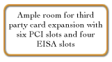

The High-Performance Enterprise-Level Server
The AST Premium® KS is a new line of high-speed, fault-tolerant, quad Intel® Pentium® Pro processor
capable servers. This high-end server product platform is designed for running the most demanding enterprise- level
applications and is perfect for mission-critical online transaction processing, data warehousing, Internet or multimedia
services. The Premium KS also offers peace of mind with numerous redundant components and power supplies; 12 "hot-swappable"
SCSI drive bays for upgrades and changes on the fly; and extensive manageability and monitoring features. Backed
by AST's standard three-year, next- business- day, on-site response warranty that includes a dedicated, toll-free
server "hotline" available 24 hours a day, 7 days a week and the optional Guardian CareSM 4-hour, on-site
response program, the Premium KS provides the performance and reliability that a successful business requires.

Premium KS Resources:
Product information PDF format:
Buying AST
- Business customers can request information on our line of Bravo business desktop computers, Ascentia notebooks, or Manhattan servers, simply by filling out this on-line form
- Reseller partners can view sales information on the AST Ovation! web site, the premier reseller information site on the Internet. Resellers can now view on-line product catalogs, marketing programs, and the most current news and information available.
